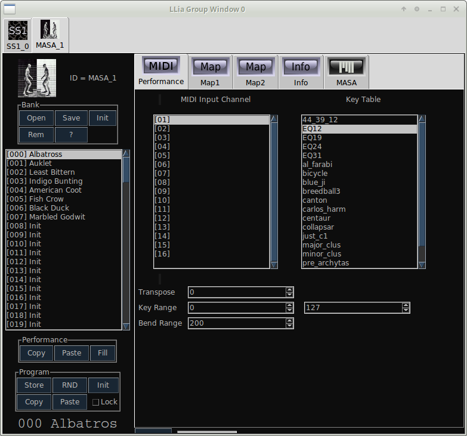
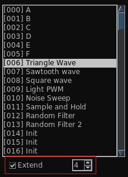
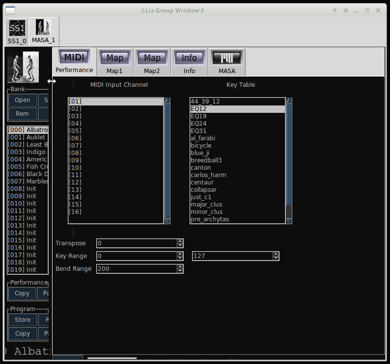

| Home | Contents | Synth Catalog | Previous: MIDI | Next: Random |
Each active synth has its own bank of 127 programs. With exception of MIDI Performance values programs are generally not compatible between different synth types. The bank area is to the left of the editor window and is divided into several vertical areas.
The terms "program" and "patch" are used interchangeably.
At the very top is an icon identifying the synth type. Immediately to the right of the icon is an ID (called the "sid" in the code) which uniquely identifies each active synth. The sid is mostly relevant for the scripting feature. The numeric portion of the sid is useful for determining how two synths may be patched. Synths which were created early will have lower sid values then later synths. Thus a synth A may be processed by effect X, only if the sid value of A is greater then the sid of X.
Immediately below the icon are buttons for operation on the bank as a whole.
Next comes a list box of the current bank contents. The current program will be highlighted though it may be scrolled out of view.
When using the PolyN and PoyRotate keymodes two additional widgets appear below the program list.
When Extend is checked program changes transmit multiple programs to the server side synths. The number in the spinner indicates how many programs are used. In the image above, selecting program 6 transmits programs 6,7,8, and 9 to the synth objects. If the number of voices exceeded 4 the programs start over again at 6.
With extended mode each note played may use a different program. The effect can be extreme or subtle. When extended mode is enabled synth editor controls are disabled. This is because it would not be clear exactly which program was being edited.
It is not obvious but there is a handle between the bank and editor sections to set the width of the bank display.
| Home | Contents | Synth Catalog | Previous: MIDI | Next: Random |